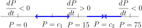
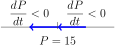

Section 1.6 Population Models and Autonomous Equations
Subsection 1.6.1 Population Equations
Suppose we're monitoring the population of some species, and let's denote the population at time \(t\) by \(P(t)\text{.}\) An obvious question to consider is how that population will change over time. Mathematically, this means we want to obtain information on \(\dv{P}{t}\) and then use it to estimate \(P(t)\text{.}\)
A simple model for \(\dv{P}{t}\) is to assume it depends only on the birth rate \(\beta\) and death rate \(\delta\) of the species in question. Then we can write
If we assume that \(\beta,\delta\) are constants, then this equation is separable and we can solve it to obtain
where \(P_{0}\) represents the "initial population", or population at time \(t = 0\text{.}\) We call (1.6.1) the natural growth equation.
The natural growth equation is simple, but it's probably too simple to be useful expect in certain scenarios (such as measuring half-life). To get a more flexible model, we can generalize (1.6.1) by assuming that the birth and death rates are actually functions of time. This gives us the general population equation.
Definition 1.6.1. General Population Equation.
The general population equation for a population \(P(t)\) is given by
Example 1.6.2. Population Explosion.
A population has \(100\) members at time \(t = 0\) years with a death rate of \(.25P\) and a birth rate of \(.5P\text{,}\) where \(P(t)\) denotes the population after \(t\) years. Find \(P(t)\) and determine if this is a reasonable population model.
If we assume that the population obeys the general growth equation, then we get
This ODE is separable, and we can therefore solve it to get
So we have a solution, and furthermore Theorem 1.5.2 guarantees that the solution is unique. But if you stare at this for a bit, you might see that it has a divide-by-zero problem. In particular,
In other words, the population becomes infinite in about two weeks!
Subsection 1.6.2 The Logistic Equation
Example 1.6.2 shows that we need to be more careful with our assumptions on population growth. One relatively simple assumption we can make is to assume that the birth rate \(\beta(t)\) decreases as population \(P\) increases. This makes sense in the physical world as well: as population increases, existing and finite resources (such as food) must be shared between more and more members of the population. Since there's less to go around, we should expect growth to slow down. In particular, let's assume that
where \(\beta_{0},\beta_{1}\) and \(\delta_{0}\) are all positive constants. Then the population equation for this scenario becomes
With a little algebra, we get the logistic equation:
for constants \(k\) and \(M\text{.}\) This equation is separable, and can be solved using partial fractions to obtain
where \(P_{0} = P(0)\text{.}\) In order to verify the reasonableness of our logistic model, let's see what happens to the population as time increases.
Example 1.6.3. Long-Term Behavior of Logistic Growth.
What is the long-term population of a species that grows according to the logistic equation \(\dv{P}{t} = kP(M-P)\text{?}\)
Using the fact that
we have
So the population should eventually level out at \(M\text{.}\)
In the logistic equation \(P' = kP(M-P)\text{,}\) the value \(M\) is the carrying capacity, and denotes the maximum sustainable population according to the model.
Example 1.6.4. Population Growth in the USA.
In millions, the population of the USA in 1990 was \(250\) and was growing at a rate of \(3.1\) per year. In 2012, the population was \(314\) and was growing at a rate of \(2.3\) per year. Assuming that the population of the USA grows logistically, estimate the population of the USA in 2017 and compare it to the current estimate of \(325.7\text{.}\)
Let \(P(t)\) denote the population of the USA (in millions), where \(t\) is the number of years after 1990. Then
and
So we need to find \(k\) and \(M\text{.}\)
When \(t = 0\text{,}\) we have \(P' = 3.1\) and \(P = 250\text{.}\) Similarly, when \(t = 22\) we have \(P' = 2.3\) and \(P = 314\text{.}\) Therefore
Solving this system gives us \(k\approx.00008\) and \(M \approx 406.4\text{.}\) Hence
This model estimates the population in 2017 to be
which is about a \(2\%\) error. Note also that this model predicts the carrying capacity of the USA to be \(406.4\text{.}\)
Subsection 1.6.3 Stability of Solutions
The logistic equation
is a particularly nice separable ODE since the right hand side depends only on the unknown function \(P\text{.}\) So we can write \(P' = f(P)\text{,}\) where \(f(P) = kP(M-P)\text{.}\) ODEs like this (where the independent variable does not appear explicitly) are called autonomous ODEs.
Autonomous ODEs like \(\dv{x}{t} = f(x)\) are useful because the behavior of their solutions can be determined qualitatively, without actually solving the ODE. This is done by looking for the constant solutions of the ODE, that is, solutions of the form \(x = c\text{.}\) For any such solution, we must have \(f(c) = 0\) as well. These solutions (i.e., the solutions of \(f(x) = 0\)) are called the critical points or equilibrium solutions of the ODE. These solutions completely determine the long-term behavior of every other solution.
Example 1.6.5. Finding Equilibrium Solutions.
Find the equilibrium solutions of \(\dv{x}{t} = -x^{2} + 7x - 10\text{.}\)
We need to solve the equation \(-x^{2} + 7x - 10 = 0\text{.}\) Thankfully, we can factor this to get \((2-x)(x-5) = 0\text{,}\) and so the equilibrium solutions are \(x = 2,5\text{.}\)
Definition 1.6.6. Stability of Solutions.
A critical point is stable if solutions that start "near" the point stay near it. A critical point is unstable if solutions that start "near" the point can diverge away from it.
Example 1.6.7. Determining the Stability of Solutions.
What are the stable critical points of \(\dv{x}{t} = -x^{2} + 7x - 10\text{?}\)
We already know that the critical points are \(x = 2, 5\text{.}\) We can determine their stability by making use of a phase diagram, which is essentially a sign chart for \(f(x) = -x^{2} + 7x - 10\text{:}\)
This shows us that solutions that begin near \(x = 2\) tend to move away from \(x = 2\text{,}\) which solutions near \(x = 5\) tend to move towards \(x = 5\text{.}\) So \(x = 2\) is unstable and \(x = 5\) is stable.
Example 1.6.9. Determining a Sustainable Population.
Consider a population of fish that obeys the logistic equation
where \(P(t)\) is the population of fish (in thousands) after \(t\) years. Suppose that the population is also harvested at some rate \(h\) (in thousands per year). What is the maximum sustainable rate of harvesting?
To account for the harvesting, we need to modify the ODE:
The harvesting will be sustainable as long as the population does not become extinct. To determine this long term behavior, we'll find the critical points and set up a phase diagram.
The critical points are given by
by the quadratic formula. We now have three cases to consider: \(3600 - 8h \lt 0, 3600 - 8h = 0, 3600 - 8h \gt 0.\) In terms of \(h\text{,}\) these reduce to \(h \lt 450, h = 450, h \gt 450\text{.}\)
-
In the first case, if \(h \lt 450\) then we have two positive, real critical points:
\begin{equation*} 0 \lt c_{1} \lt 15 \lt c_{2} \lt 75. \end{equation*}The phase diagram for this situation is
Figure 1.6.10. So we see that \(c_{1}\) is unstable while \(c_{2}\) is stable. In particular, as long as \(P\geq c_{1} = 15 - \sqrt{3600 - 8h}\text{,}\) then the rate of harvesting is sustainable.
-
Now assume that \(h = 450\text{.}\) Then we have only one equilibrium solution: \(c = 15\text{.}\) The corresponding phase diagram is
Figure 1.6.11. We interpret the phase diagram as follows: if \(P\) is less than
15,000
then the population will collapse to extinction. Otherwise, the population will stabilize at \(15,000\text{.}\) This type of critical point is often called semi-stable. Finally, consider the case \(h \gt 450\text{.}\) Then we have no (real) critical points. Since imaginary populations don't make sense in this model, there is no sustainable population. No matter how large the initial population, it will eventually go extinct if harvested at a rate greater than \(450\text{.}\)
By the above, the largest sustainable harvesting rate is \(h = 450,\) as long as \(P_{0}\geq 15\text{.}\)
Subsection 1.6.4 Linear Stability Analysis
Given the autonomous ODE \(\dv{x}{t} = f(x)\text{,}\) we saw above that we can qualify the behavior of equilibrium solutions by setting up a phase diagram. We can go a step further and actually qualify the growth of solutions that are "near" equilibrium solutions. In particular, we have the following theorem.
Theorem 1.6.12. Linear Stability Analysis.
Suppose \(\dv{x}{t} = f(x)\) where \(f(x)\) is continuously differentiable, and let \(x^{*}\) denote a critical point/equilibrium solution of the ODE. If \(f'(x^{*}) \lt 0\text{,}\) then \(x^{*}\) is stable and solutions near \(x^{*}\) will move exponentially towards \(x^{*}\text{.}\) If \(f'(x^{*}) \gt 0\text{,}\) then \(x^{*}\) is unstable and solutions near \(x^{*}\) will move exponentially away from \(x^{*}\text{.}\) If \(f'(x^{*}) = 0\text{,}\) then more advanced methods are required.
Example 1.6.13. Classifying the Critical Points of the Logistic Equation.
Classify the critical points of the logistic equation as stable or unstable.
Recall that the logistic equation is given by \(P' = kP(M-P) = f(P)\) for (we'll assume) positive constants \(k,M\text{.}\) From here, we clearly see that the critical points are \(P = 0\) and \(P = M\) (which makes sense from a population standpoint!). We could set up a phase diagram to determine stability, but we'll use Theorem 1.6.12 instead.
Since \(f'(P) = k(M-P) - kP\text{,}\) we see that
Hence \(P = 0\) is unstable, while \(P = M\) is stable.